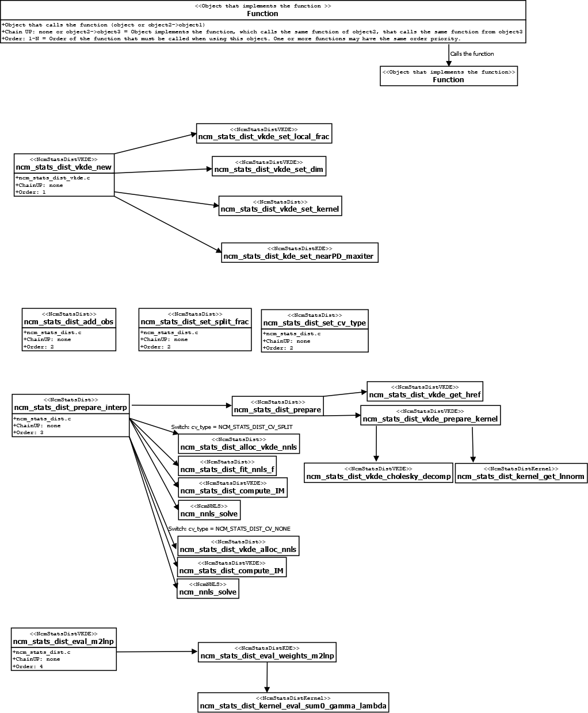

| Top |
NcmStatsDistVKDENcmStatsDistVKDE — Abstract class for implementing N-dimensional probability distributions with a variable density estimator kernel. |
| double | local-frac | Read / Write / Construct |
| gboolean | use-rot-href | Read / Write / Construct |
Abstract object to reconstruct an arbitrary N-dimensional probability distribution. This object provides the complementary tools to perform a radial basis interpolation in a multidimensional function using the NcmStatsDist class.
This object sets the kernel $\phi$ to be used in the radial basis interpolation. This object also implements some calculations needed in the NcmStatsDist class, such as the covariance matrices of the whole sample points and its Cholesky decompositions, the preparation of the interpolation matrix $IM$, the kernel normalization factors, and given a sample vector $\vec{x}$, the distribution evaluated in these points. Some of these calculations are explained below.
The NcmStatsDistVKDE uses a different covariance matrix for each sample point. This feature is computed
in the ncm_stats_dist_prepare_kernel() function. In this algorithm, one should define the local_frac
parameter, that is,
the fraction of nearest sample points that will be used to compute each covariance matrix of each
sample point. This is done by calling the function ncm_stats_dist_vkde_set_local_frac().
The rest of the calculation follows the same procedure as the NcmStatsDist and NcmStatsDistKDE objects,
using now a different covariance matrix and normalization factor for each kernel. For more information about
how the NcmStatsDist class works, check NcmStatsDist and NcmStatsDistKDE objects.
The user must provide input the values: sdk
, CV_type
- ncm_stats_dist_vkde_new(), y
- ncm_stats_dist_add_obs(), split_frac
- ncm_stats_dist_set_split_frac(),
over_smooth
- ncm_stats_dist_set_over_smooth(), local_Frac
- ncm_stats_dist_vkde_set_local_frac(), $v(x)$ - ncm_stats_dist_prepare_interp().
To see an example of how to use this object and the main functions that are called within each function, check the fluxogram at the end of this documentation,
where the order of the functions that should be called by the user and some of the functions that the algorithm calls.

NcmStatsDistVKDE * ncm_stats_dist_vkde_new (NcmStatsDistKernel *sdk,NcmStatsDistCV CV_type);
Creates a new NcmStatsDistVKDE object using sdk
as
kernel and CV_type
as cross-validation method.
NcmStatsDistVKDE *
ncm_stats_dist_vkde_ref (NcmStatsDistVKDE *sdvkde);
Increases the reference count of sdvkde
.
void
ncm_stats_dist_vkde_free (NcmStatsDistVKDE *sdvkde);
Decreases the reference count of sdvkde
.
void
ncm_stats_dist_vkde_clear (NcmStatsDistVKDE **sdvkde);
Decreases the reference count of *sdvkde
and sets the pointer *sdvkde
to NULL.
void ncm_stats_dist_vkde_set_local_frac (NcmStatsDistVKDE *sdvkde,const gdouble local_frac);
Sets local kernel fraction to local_frac
. This fraction
defines the amount of closest points from each sample point
that will be used to compute the covariance matrix of each point.
gdouble
ncm_stats_dist_vkde_get_local_frac (NcmStatsDistVKDE *sdvkde);
void ncm_stats_dist_vkde_set_use_rot_href (NcmStatsDistVKDE *sdvkde,const gboolean use_rot_href);
Sets whether to use the rule of thumb bandwidth for the
gboolean
ncm_stats_dist_vkde_get_use_rot_href (NcmStatsDistVKDE *sdvkde);
“local-frac” property “local-frac” double
Fraction to use in the local kernel covariance computation.
Owner: NcmStatsDistVKDE
Flags: Read / Write / Construct
Allowed values: [0.001,1]
Default value: 0.05
“use-rot-href” property“use-rot-href” gboolean
Whether to use the href rule-of-thumb to compute the final bandwidth.
Owner: NcmStatsDistVKDE
Flags: Read / Write / Construct
Default value: FALSE